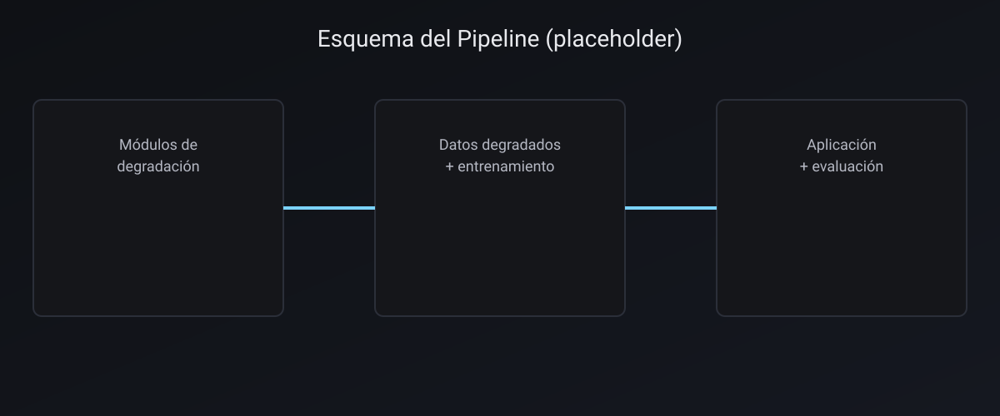

Abstract
We present a benchmark-driven methodology to study how historically-inspired synthetic degradations affect the performance of video restoration models. Using a modular pipeline, we generate artefacts on clean sequences and analyze their impact on restoration quality.
Note: Numerical results and the camera-ready will be posted later.
Method Overview
The toolkit composes artefact modules (e.g., scratches, blobs, vignette, flicker) in a controllable, reproducible manner to synthesize degraded data used to train and evaluate restoration models. It promotes temporal coherence and preset-controlled variation.
- Atomic degradations and stacked mixes
- Reproducible seeds and configurations
- Backbone training and comparative evaluation

Video Gallery
Below are a few examples generated by the pipeline. To add more, place
.mp4 files under docs/videos/ (organized by subfolders) and
update assets/data/videos.js accordingly.
Contact
For questions or collaboration, please open an issue or reach out by email.